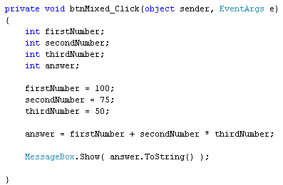

Multiplication and Division in C#
<< Continues from the previous lesson
To multiply and divide, the following symbols are used in C# programming:
* Multiply
/ Divide
Change your code to this:
answer = ( firstNumber + secondNumber ) * thirdNumber;
Because of the brackets, the first thing that C# does is to add the value in firstNumber to the value in secondNumber. The total is then multiplied ( * ) by the value in thirdNumber. With the values we currently have in the variables, the sum is this:
answer = ( 100 + 75 ) * 50
Run your programme and click your button. The answer you should get is 8750. Return to the coding window. Now remove the two round brackets. Your coding window will then be this:

Run your programme again. Click the button. This time, the answer is 3850! The reason it's different is because of Operator Precedence. With the brackets, you forced C# to calculate the addition first. Without the brackets, C# no longer calculates from left to right. So it's NOT doing this:
( 100 + 75 ) * 50
C# sees multiplication as having priority over addition and subtraction. So it does the multiplying first. It does this:
100 + ( 75 * 50 )
The two give you totally different answers.
The same is true of division. Try this. Amend your line of code to the following:
answer = ( firstNumber + secondNumber ) / thirdNumber;
Run the programme and the answer will be 3. (The real answer to (100 + 75) / 50 is, of course, 3.5. But because we're using integer variables and not floats, the point something at the end gets chopped off.)
So we're using the divide symbol now ( / ), instead of the multiplication symbol (*). The addition is done first, because we have a pair of round brackets. The total of the addition is then divided by the value in thirdNumber.
Return to the code, and change the line to this:
answer = firstNumber + secondNumber / thirdNumber;
So just remove the round brackets. Run your programme again, and you'll find that the answer in the message box is now 101. (It would have been 101.5, if we had used a float variables instead of integers.)
If you now replace the plus symbol ( + ) above with a multiplication symbol
( * ), C# switches back to "left to right" calculation. This is because
it sees division and multiplication as having equal weight. The answer you'll
get without brackets is 150.
Exercise B
Try the following two lines. First this one
answer = (firstNumber * secondNumber) / thirdNumber;
And now this one:
answer = firstNumber * (secondNumber / thirdNumber);
What answer do you get with the round brackets in different places? Can you understand why? If not, go back over this section.
In the next part, we'll get numbers from text boxes on a form, and use them for some simple arithmetic.